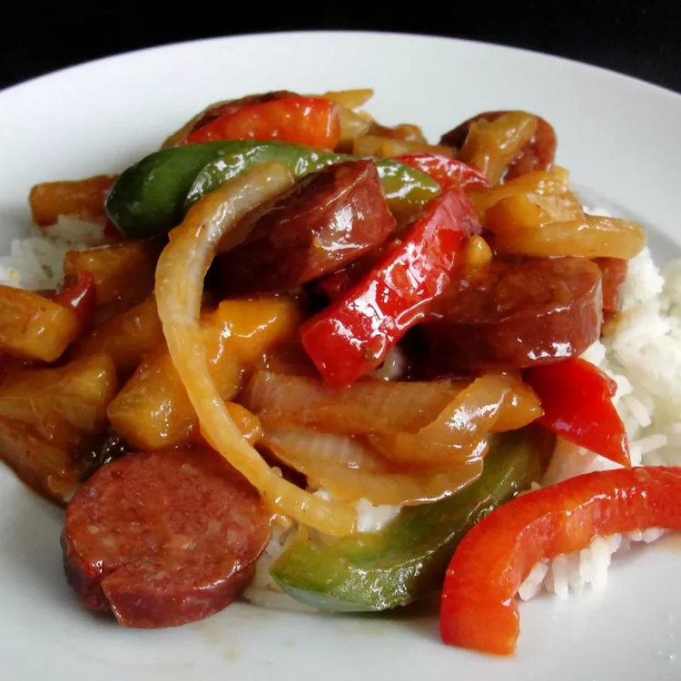

Hawaiian Sausage Skillet

Description
I made this up one day when I couldn't find a recipe anywhere with these ingredients. So I kind of threw it together on a whim. Sugar can be adjusted for sweetness, and if the sauce gets a bit thicker than desired I suggest adding a little chicken broth as it's thickening. Serve immediately over rice.
Nutrient packed with 11 grams of protein and 450 calories per serving!
Ingredients
-
1 tablespoon vegetable oil, or more to taste
-
1 (16 ounce) package Polish sausage, or to taste, cut into 1-inch squares
-
1 large onion, thinly sliced
-
1 large green bell pepper, cut into 1-inch squares
-
¾ fresh pineapple - peeled, cored, and cut into chunks
-
2 tablespoons cornstarch
-
½ cup pineapple juice, or more to taste
-
⅓ cup packed brown sugar, or to taste
-
1 ½ teaspoons white sugar
- 2 tablespoons cider vinegar
- 2 tablespoons soy sauce
- 2 teaspoons minced garlic
Steps
-
Heat oil in a large skillet over medium heat. Cook and stir sausage, onion, and green bell pepper until vegetables start to become tender, about 8 minutes; add pineapple and cook, stirring occasionally, until the pineapple is hot, about 5 minutes more.
-
Beat pineapple juice and cornstarch together in a bowl using a whisk. Stir brown sugar, cider vinegar, soy sauce, and minced garlic with the pineapple juice until the sugar dissolves into the liquid; pour over the sausage mixture and cook until the sauce thickens, 5 to 8 minutes.
Homepage